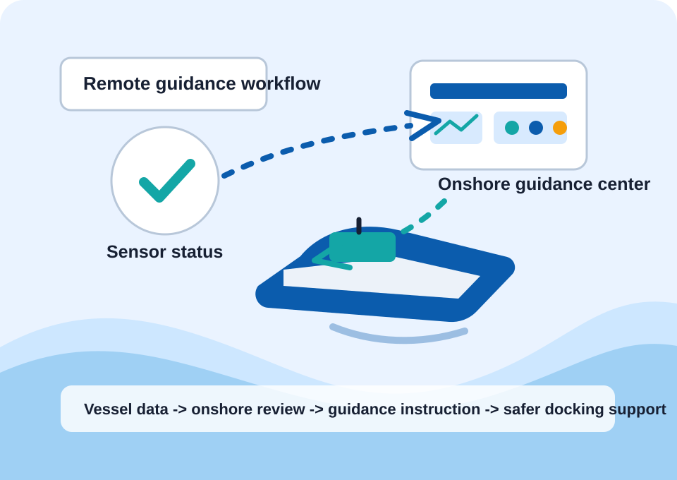

Planning
Structured the project scope, timeline, milestones, and implementation priorities for the student team.
University project | Project management | Digital services
A portfolio version of a university software implementation project focused on remote vessel guidance, safer docking support, stakeholder planning, and structured project delivery.

Project overview
The project explored how a vessel could communicate with an onshore maritime operations center to support remote guidance, monitoring, and docking decisions. The portfolio version focuses on the project-management side: scope definition, planning, documentation, stakeholder communication, and final presentation.
My contribution
Structured the project scope, timeline, milestones, and implementation priorities for the student team.
Coordinated project documentation so the concept, workflow, and delivery logic were clear to stakeholders.
Helped translate a technical project idea into understandable updates, decisions, and presentation material.
Supported role clarity, task tracking, and team alignment across planning, technical, and presentation work.
Delivery model
Clarify the remote guidance concept, target users, vessel-side needs, and onshore decision-support workflow.
Break the concept into project phases, documentation tasks, team responsibilities, and review checkpoints.
Identify uncertainty around technical integration, communication reliability, security, safety, and scope control.
Prepare a final explanation of the solution concept, project value, and implementation direction.
Project thinking
Remote guidance needs clear control logic and responsible decision support for docking scenarios.
The vessel and onshore center need reliable real-time information exchange.
Remote access and vessel data flows need careful access control and risk awareness.
Operators need understandable guidance, alerts, status information, and documentation.
Reflection
This project connects my academic background in digital services and IT governance with practical project management. It shows how I approach complex technology work: understand the problem, organize the team, document decisions, and communicate the solution clearly.